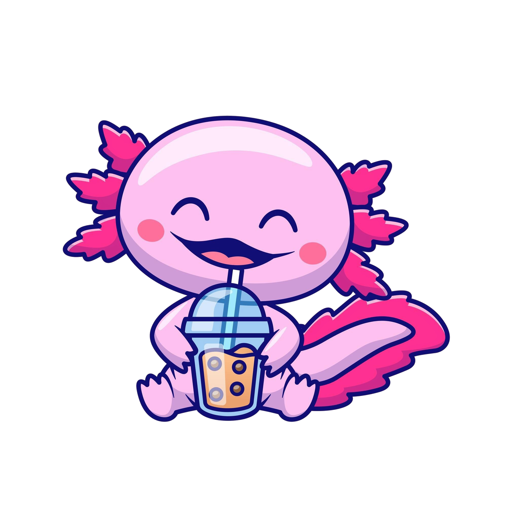

Mi nombre es Lucas, y hoy aprenderás sobre.....
¡La gran Lengua de Señas Mexicana! (LSM), aunque eso si, siéntete libre de aprender y relájate, ¡te aseguro que te vas a divertir!
CONTINUAR
Tu navegador no soporta el elemento de audio.